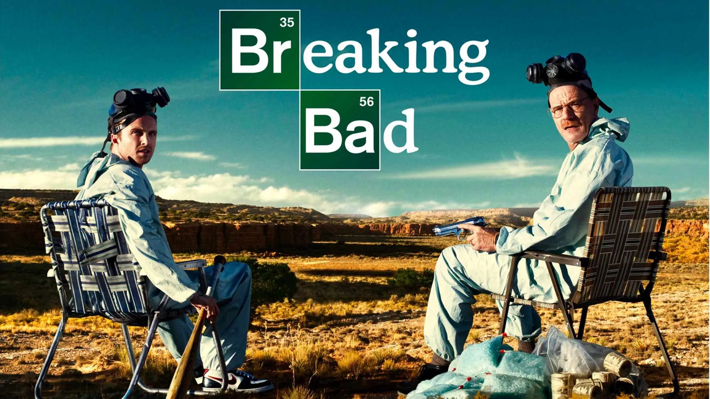
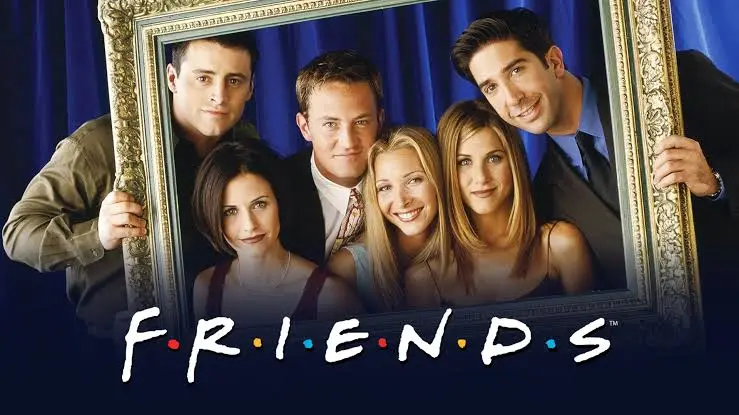

1

Game of Thrones
2011-2019
Fantasia, Drama, Ação
Épica adaptação das obras de George R. R. Martin. Conflitos, batalhas e personagens envolventes na luta pelo Trono de Ferro.
9.3/10 IMDb
89% Rotten Tomatoes
2

Breaking Bad
2008-2013
Crime, Drama, Suspense
A transformação de um professor de química em um traficante de metanfetamina. Uma história intensa e impecável.
9.5/10 IMDb
96% Rotten Tomatoes
3

Friends
1994-2004
Comédia, Romance
As vidas, amores e amizades de seis amigos em Nova Iorque. Um comédia icônica e divertida.
8.9/10 IMDb
83% Rotten Tomatoes